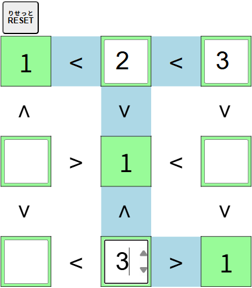

【
不等号
ふとうごう
パズル】
すべての
不等号
ふとうごう
を
成立
せいりつ
させましょう。

・１から
縦
たて
のマスの
数
かず
（
上
うえ
の
例
れい
なら４）までの
数字
すうじ
を
空
あ
いているマスに
入
い
れます。
・
同
おな
じ
行
ぎょう
（
横
よこ
）と
同
おな
じ
列
れつ
（
縦
たて
）には
同
おな
じ
数字
すうじ
は
入
はい
りません。
・[
RESET
りせっと
]ボタンをクリック（タップ）すると
最初
さいしょ
からやり
直
なお
す
事
こと
ができます。
閉
と
じる